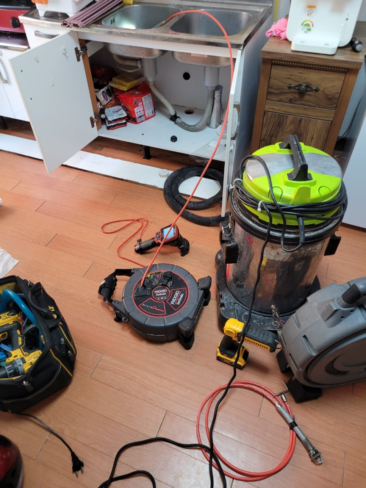
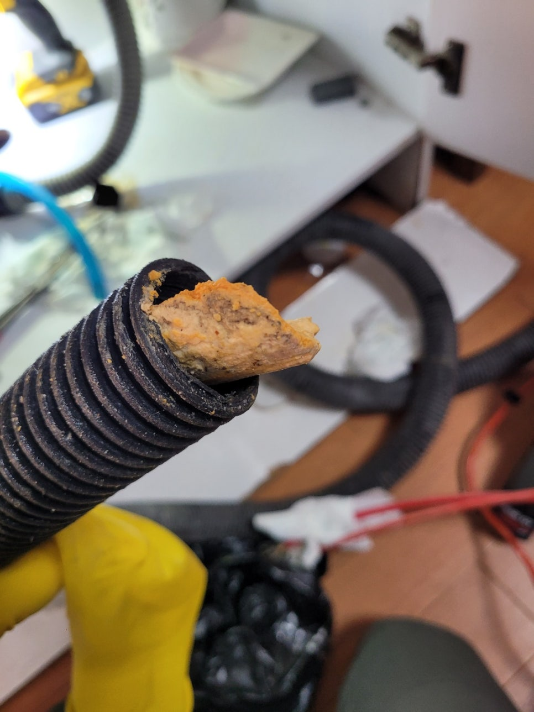
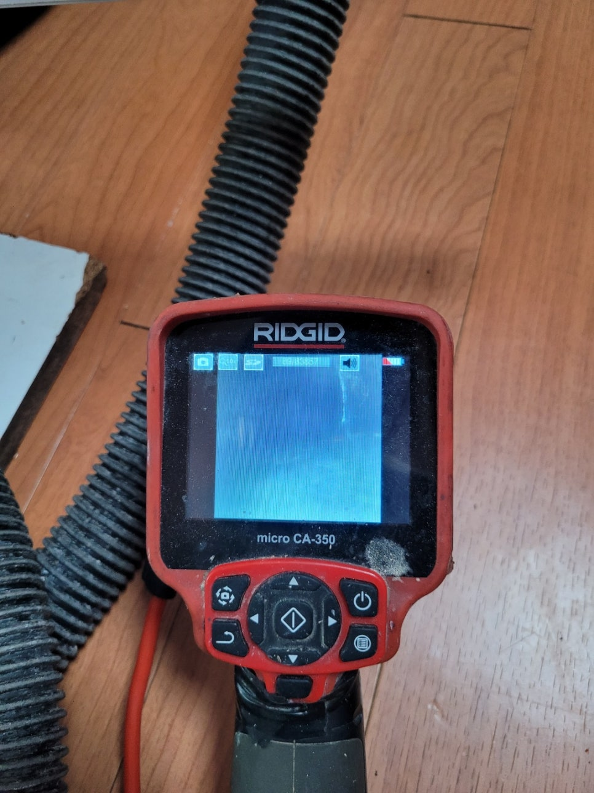
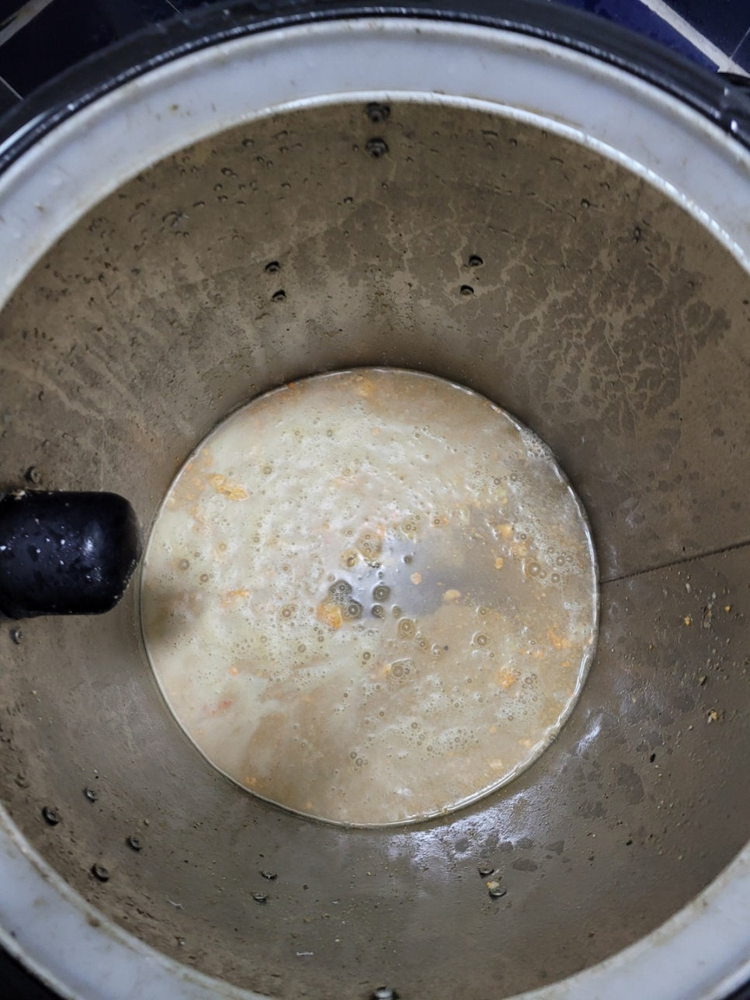
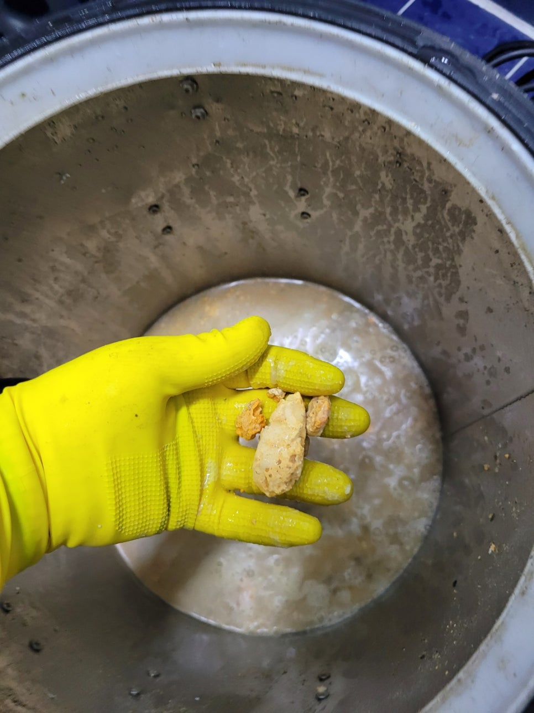
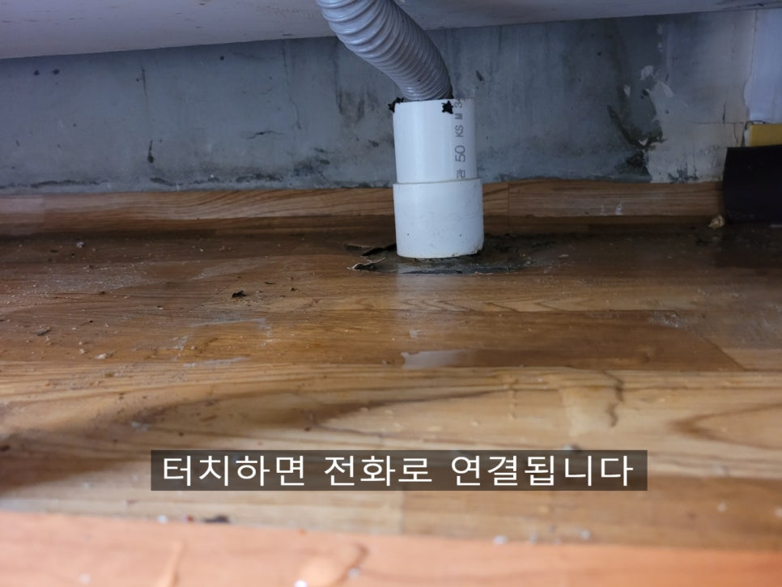
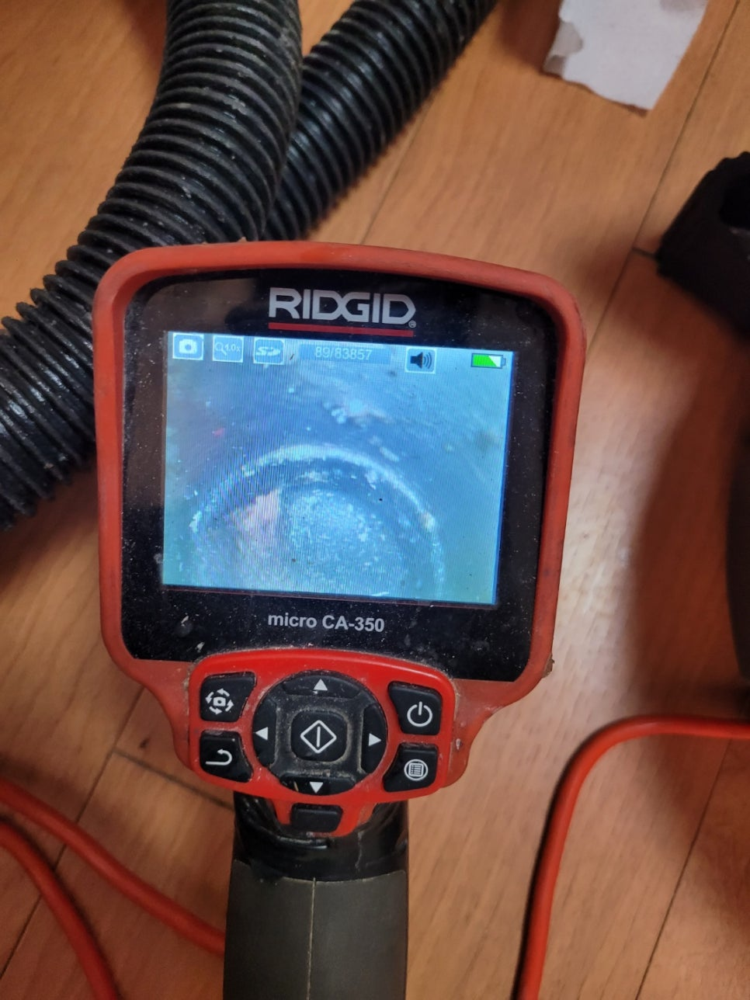
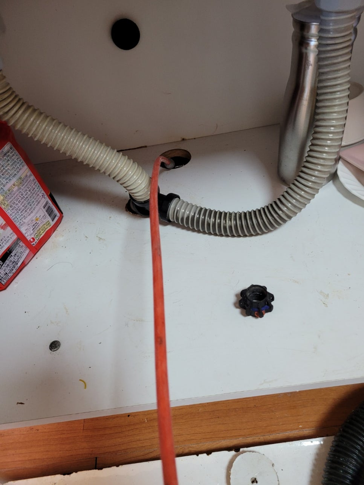

🏠 상록구 본오동 싱크대 막힘 뚫음 깨끗하게 해결했어요
용인 싱크대막힘 전문 시공 후기

📋 작업 개요
- 위치: 용인
- 서비스 유형: 싱크대막힘, 하수구막힘, 배관막힘, 뚫는업체
- 작업 일시: 2022. 5. 19. 22:45
- 업체명: 하수구수사대 (010-5615-2118)
🔍 문제 상황
상록구 본오동 싱크대 막힘 뚫음
매일같이 사용하는 물은
하수구로 흘러가게 되는데요.
그래서 이러한 곳이
시원하게 배수되기 위해서는
걸리적거리는 부분 없이
무척이나 깨끗하고
청결하게 되어 있어야
한다고 할 수 있어요.
시간이 오래 지났거나
기름을 많이 이용을 하는 곳 등
상황과 장소에 따라서
상태가 달라질 수 있으므로
주기적으로 점검을 하는 편이
좋은 방법이라고 할 수 있습니다.
이번에 연락을 받고
가게 된 현장은 상록구 본오동
싱크대 막힘 뚫음으로
불편을 겪고 계셨던 곳이었어요.
먼저 전문 장비를 사용해서
어떠한 상태인지 파악하는 것부터
시작을 했습니다.
원인을 제대로 알기 전에
무턱대고 다음 단계로 나가게 되면
정말로 했어야 하는 것들을
빠뜨린 상태로 지나칠 수 있어서
시간이 지난 후에

🔎 원인 분석
💡 전문가 진단: 하수구수사대최신장비보유!1년as 보장!주말,공휴일도 ok!010-2340-2118
다시 문제가 생기게 될 수도
있기 때문입니다.
그래서 최대한 사전에
꼼꼼히 체크를 해야 하는 것들을
확인한 후에 하는 편인데요
래야 이렇게 기름때가
가득 있는 곳을 제대로 알 수 있고
어떤 방식으로 할지
가닥을 잡을 수 있게 됩니다.
또한 이렇듯 덩어리가 생긴 것들도
정확한 지점을 알 수 있기에
더욱 빠르게 걸러낼 수 있게 되죠.
특히 이런 것들이
하수구를 막게 되면
물이 잘 흘러가지 않을 뿐만 아니라
점차 압력이 가해져서
해당 부분이 약해져서
파열이 될 수가 있으므로
더욱 조심해서 해드리고 있습니다.
만약 실력이 부족하거나
제대로 알지 못한 상태로 하게 되면
건드리게 되면
자칫 더욱 큰 피해가 생길 수도
있기 때문이죠.
그러므로 최대한 세밀하게
작업해 드리고 있고
이렇게 물이 흥건하게 나올 정도의

🔧 작업 과정
상태라면 더욱 신경을 써서
해드리는 편입니다.
그리고 이렇게 직접 보면서
하고 있어서 더 정교하게
작업을 할 수 있는 것 같은데요.
상당한 양의 슬러지가
배관 벽에 붙어 있어서
지저분한 모습인 것도
관찰할 수 있었습니다.
그래서 공간에 맞는
전문 장비를 사용해서
해드리게 되었는데요.
각 용도에 맞게 써야 간단하면서
제대로 할 수 있기에
이번처럼 상록구 본오동
싱크대 막힘 뚫음을 하게 될 때도
적절한 것을 활용하면서
쓰게 되었습니다.
그렇기에 보시는 것처럼
스프링에 온갖 물질들이
가득 올라온 것을 확인할 수 있었어요.
제거 작업 자체를 하지 않고서
진행하게 되면
위에서 말씀을 드린 것처럼
과도한 압이 가해질 수 있고
업체를 불러 해결을 했음에도
또다시 막힐 수가 있어서
최대한 원인부터 제공하고
후에 단계별로 처리해 드렸습니다.
이윽고 깨끗한 관의
상태를 볼 수 있었는데요.
그동안 불편한 생활을 하셨던
고객님이 빠르게 일상으로
돌아가실 수 있도록 신속하게
진행을 했던 곳이었습니다.
또 속도뿐만 아니라
정확도도 높이기 위해서
여러 차례 확인 작업도
같이 해드려서 결과물
역시 좋게 나올 수 있었습니다.
이렇게 하기 위해서
그간 여러 곳을 다니며
노하우를 쌓은 실력을
최대한 발휘해 드렸던 것 같은데요.


✅ 작업 완료
앞으로도 상록구 본오동
싱크대 막힘 뚫음을
잘 해드렸던 것과 같이
빠르고 명확하게 하기 위해서
최선을 다해서 임하는
슬기로운 하수구 생활이 되겠습니다.
하수구수사대
최신장비보유!
1년as 보장!
주말,공휴일도 ok!
010-2340-2118




⚠️ 주방 싱크대 배관 막힘 예방 수칙
- ✅ 기름기가 묻은 식기나 프라이팬은 설거지 전 키친타올로 반드시 기름때를 닦아내세요.
- ✅ 주기적으로 싱크대 개수대에 뜨거운 물을 가득 받아 한 번에 내려 배관 내부 기름을 씻어내세요.
- ✅ 배수구 거름망을 미세한 필터로 사용하시고 음식물 찌꺼기가 틈으로 새어 들지 않게 관리하세요.
- ✅ 베이킹소다와 식초를 뜨거운 물과 함께 일주일에 한 번씩 부어주면 배관 살균과 막힘 예방에 좋습니다.
💡 핵심 정리
- 확실한 장비 작업(내시경 점검 및 샤프트 스케일링)으로 원인을 뿌리 뽑습니다.
- 작업 후 1년 이내에 동일한 부위 재발 시 100% 무상 A/S 서비스를 보장합니다.
- 서울 · 경기 · 인천 전 지역에 24시간 언제든 긴급 출동할 수 있도록 항시 대기 중입니다.
❓ 자주 묻는 질문 (FAQ)
🚨 용인 싱크대막힘 문제로 고민이신가요?
정확한 원인 진단과 확실한 시공으로 재발 없는 해결을 약속드립니다.
24시간 긴급 출동 | 서울 · 경기 · 인천 전지역 | 1년 내 재발 시 무상 A/S